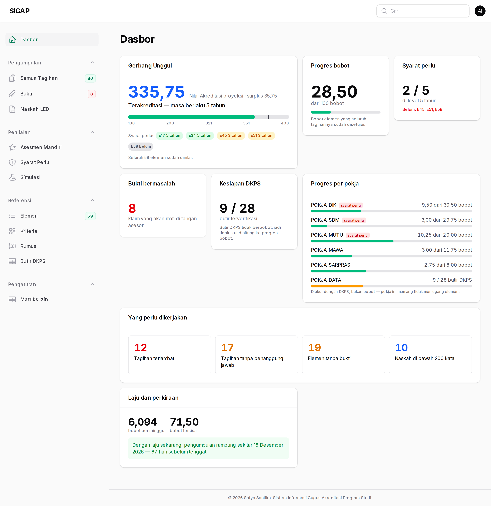
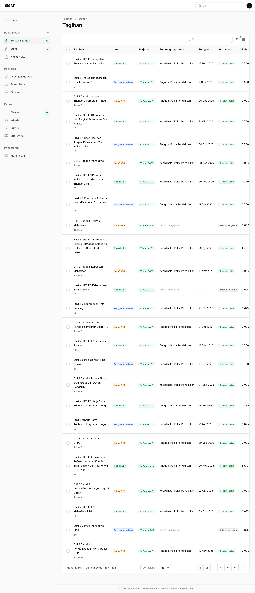
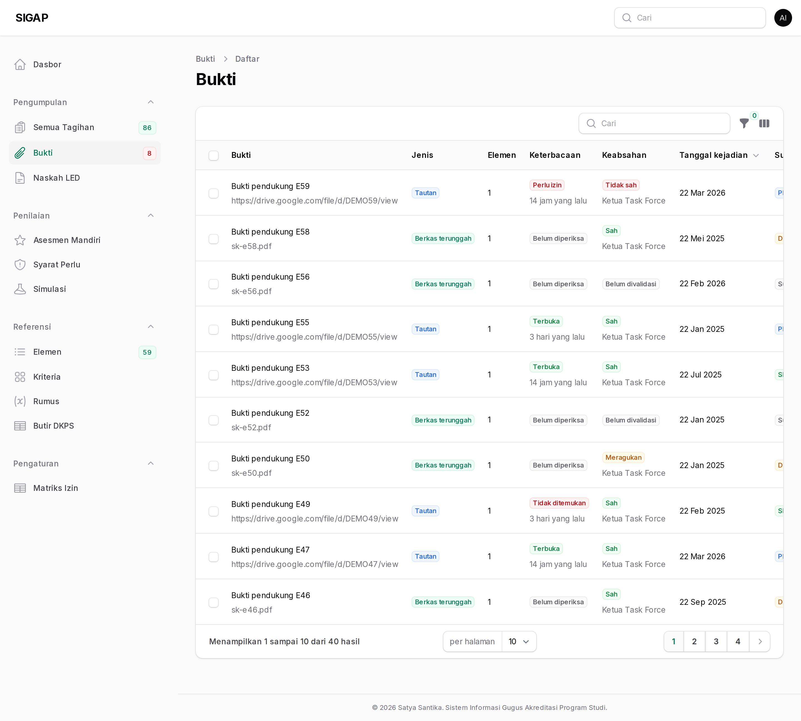
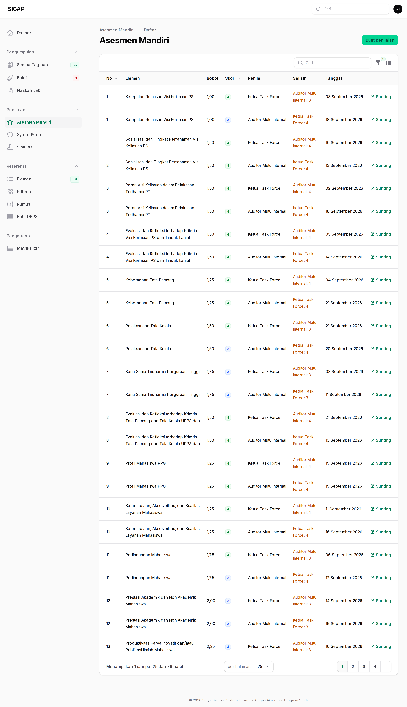
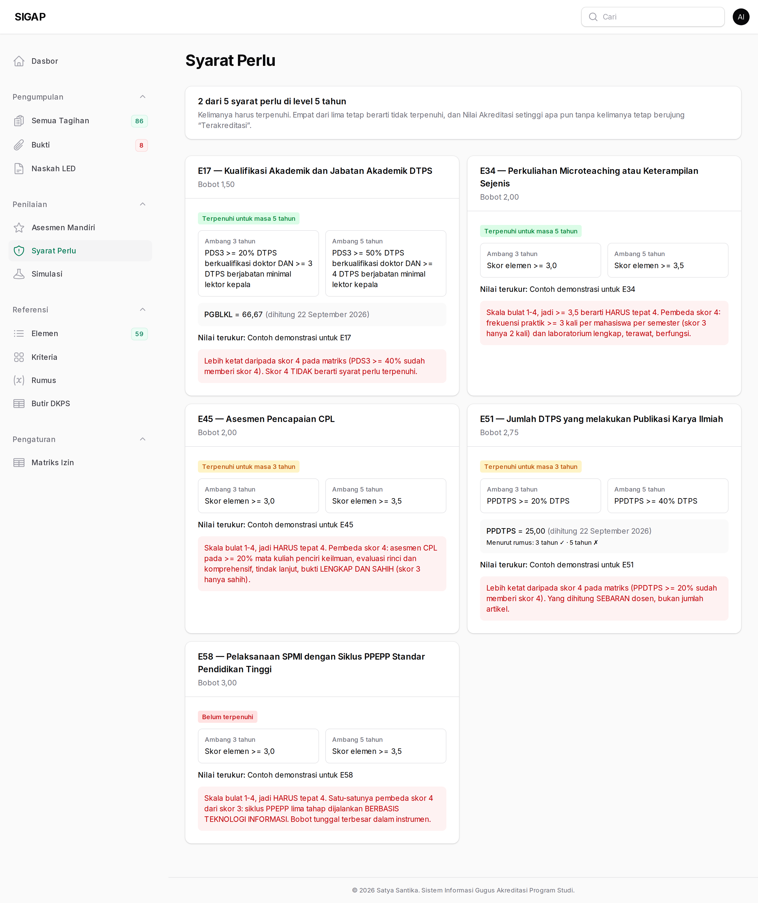
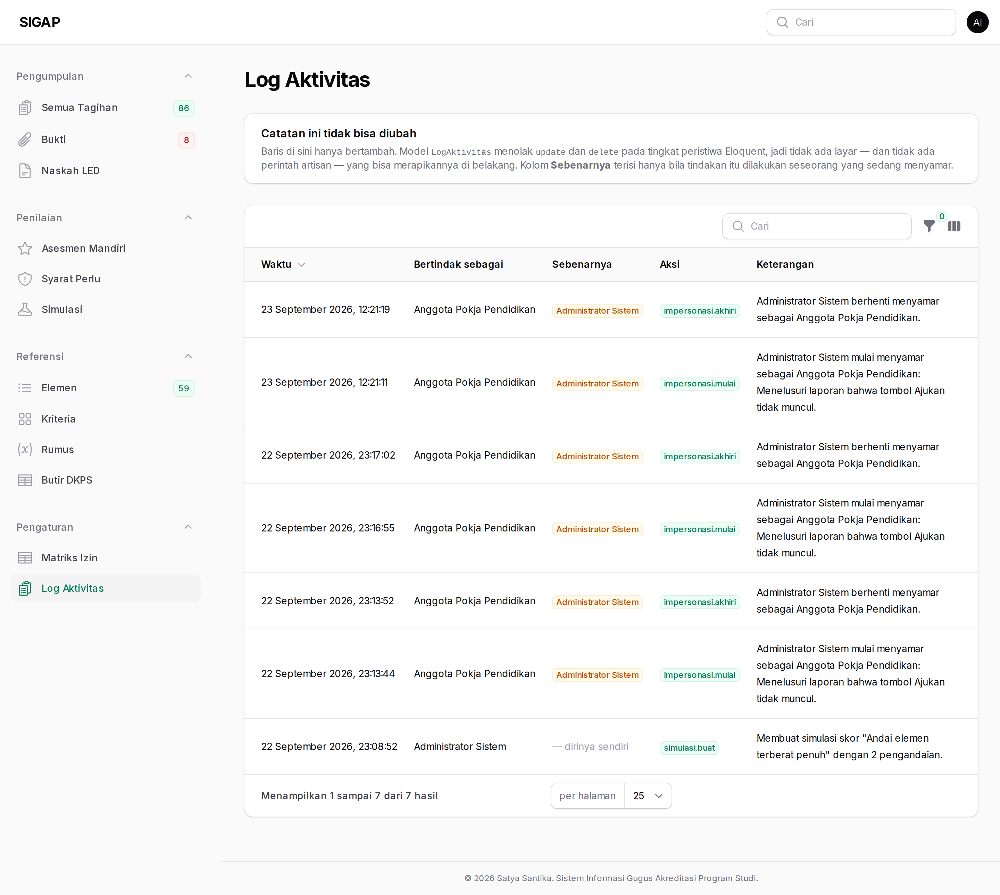
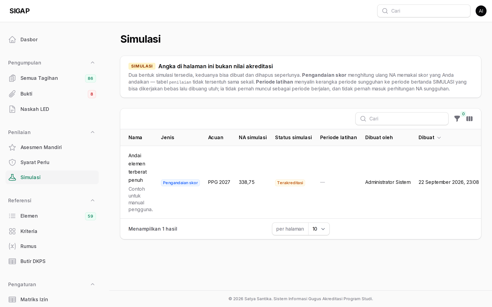

Auditor membaca seluruhnya dan mengubah hampir tidak ada apa pun. Yang bisa Anda tulis hanya dua: skor asesmen mandiri Anda sendiri, dan komentar.
Susunan ini disengaja. Pemeriksaan kehilangan artinya bila pemeriksanya juga ikut memperbaiki apa yang diperiksanya.
Dasbor
Mulailah dari Gerbang Unggul dan Bukti bermasalah. Dua ubin itu yang paling sering menunjukkan jarak antara apa yang diklaim dan apa yang bisa dibuktikan.

Semua tagihan
Seluruh 137 tagihan beserta riwayat status masing-masing. Riwayatnya bersifat append only: tidak pernah ditimpa dan tidak pernah dihapus, jadi urutan kejadian yang Anda baca adalah urutan yang sebenarnya.

Bukti
Perhatikan kedua sumbu secara terpisah. Bukti yang tautannya terbuka tetapi validasinya merah adalah dokumen yang keliru, bukan dokumen yang hilang — dan keduanya menuntut tindakan yang berbeda.

Asesmen mandiri
Auditor memberi skor sendiri, terpisah dari skor ketua. Justru selisih antara keduanya yang berguna: elemen yang dinilai 4 oleh ketua dan 2 oleh auditor hampir selalu elemen yang buktinya belum meyakinkan.

Syarat perlu
Lima baris yang menentukan status akhir. Periksalah bukti pendukungnya, bukan hanya levelnya: level yang ditetapkan tanpa bukti yang terbaca tidak akan bertahan di tangan asesor.

Log aktivitas
Auditor membaca log yang sama dengan admin, dan itu disengaja: yang diperiksa tidak boleh menjadi satu-satunya pihak yang memegang catatan pemeriksaan.
Kolom Sebenarnya menandai tindakan yang dilakukan
lewat penyamaran. Bila ada persetujuan yang lahir dari penyamaran,
periksalah alasan yang tercatat pada baris impersonasi.mulai
di sesi yang sama.

Simulasi
Anda bisa membaca simulasi untuk memahami pertimbangan yang diambil task force. Pastikan angka simulasi tidak pernah tercampur ke dalam laporan audit — halamannya diberi lencana SIMULASI justru untuk itu.
